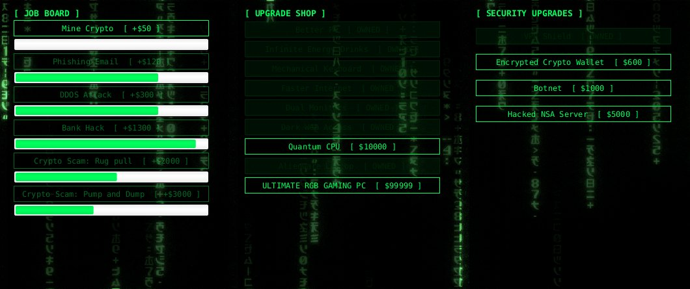
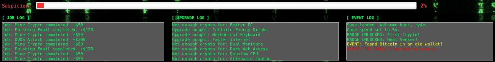

Overview
Hacker Tycoon is a tongue-in-cheek idle game. You take hacking jobs, from mining crypto up to a pump-and-dump scam, and spend what you earn on upgrades. The catch is the suspicion meter: it climbs while you play, and when it hits 100% the FBI raids you and takes half your crypto.
It was our term project for BCIT's COMP 2522 (object-oriented programming), built by two people from January to April 2026 in Java 25 and JavaFX. The code stays private under course rules, so this page walks through it instead.
My role
I wrote about 80% of the game's code. My teammate set up the project and its first classes; I built the game on top of them.
- The game itself: the main game screen, the game loop, and the job, upgrade, and settings panels
- Systems: save and load, the sound system, most of the random events, and the badge system
- Feedback: three colour-coded logs and the live suspicion meter
- Code quality: Javadoc throughout, and the CheckStyle configuration and cleanup
My teammate built the starting class structure (player, jobs, upgrades, events), added the security jobs and the first sound effects, set up Gradle, and wrote the unit tests.
The game


How it plays
- Six jobs, from "Mine Crypto" (+$50) to "Crypto Scam: Pump and Dump" (+$3,000), each with its own progress bar and duration
- A game loop every two seconds: suspicion rises by half a percent, and there's an 8% chance of one of ten random events, from "Mom unplugged the router!" to finding Bitcoin in an old wallet
- At 100% suspicion the FBI raids: half your crypto is gone and the meter resets
- A regular upgrade shop and a security shop, thirteen upgrades in all, up to a $99,999 "ULTIMATE RGB GAMING PC"
- Eight badges, such as Millionaire, FBI Survivor (three raids), and Upgrade Addict (fifteen upgrades)
- Game speed at 1×, 2×, or 5×; save and load; sound with a mute switch
What I built
Timers, not threads
Every moving part runs on JavaFX Timelines on the UI thread: the game loop, each job's progress bar, and the delayed start. Game speed is a single multiplier: it sets the game loop's rate, and every job started afterwards runs at the same rate, so 5× speed needed no changes to the timing logic.
Save and load
The save system writes the player's name, crypto, and suspicion to a properties file and reads them back on launch. An early version asked for a hacker name every time the game started; I changed it to ask only on the very first launch.
One sound system
Sound began as playback code scattered through the game. I pulled it into a single SoundManager class: one place for click, success, loss, warning, badge, and raid effects, looping background music at a lower volume, and the mute switch.
Logs you can read
One console became three: jobs, upgrades, and events, each line coloured by type through a MessageType enum (info, success, upgrade, warning, error). In long sessions the logs kept growing until the interface froze, so they now clear themselves every 20 seconds.
Badges
The badge system tracks lifetime earnings, jobs completed, upgrades bought, raids survived, and peak suspicion, and unlocks a badge the moment its condition is met, with its own sound and a line in the event log.
Tech stack
What I'd do next
- Upgrades raise a "hacking power" stat that nothing reads yet. Next step: feed it into job payouts, so upgrades pay for themselves
- Let security upgrades slow the suspicion meter, which would give the second shop a real job
- After loading a save, the suspicion bar is right but its percentage label reads 0% until the next tick; it should update on load